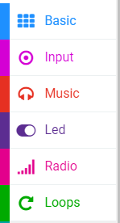
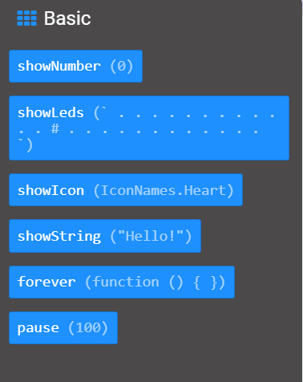
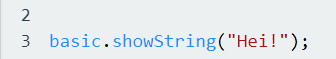
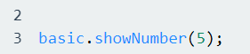
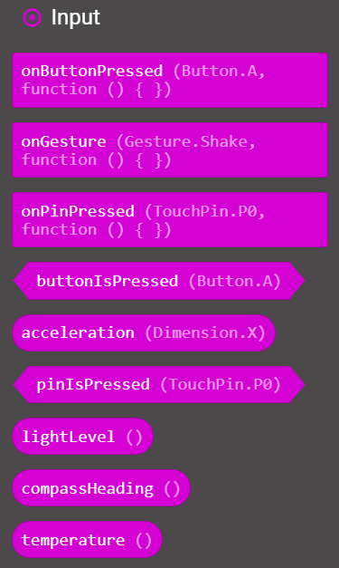
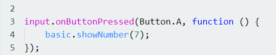

Før vi begynner med å programmere JavaScript med Micro:Bit, så er det en god ide å først bli kjent med Micro:Bit sine innebygde funksjoner i editoren MakeCode. Hvordan vi programmerer JavaScript i Micro:Bit er da litt annerledes enn om vi skulle gjort dette i en vanlig tekst-editor som vi har på PCen. Vanligvis når vi ønsker at programmet skal skrive ut en verdi eller vise innholdet i en variabel, eller et enkelt ord for eksempel, så ville vi brukt alert funksjonen til JavaScript eller kodelinjen document.GetElementById(«demo).innerHTML = variabelnavn; Dette vil da ikke fungere i Micro:Bit, fordi Micro:Bit har en egen kategori for å vise verdier som vi har laget som heter da «Basic». Denne kategorien ligger her i MakeCode:
Som vi ser så ligger Basic øverst i denne menyen, samt andre kategorier som Input og Music. Men vi fokuserer på Basic her. Inne i Basic-delen så har vi dette innholdet:
Her så ser vi hva Basic har å tilby innen koding av JavaScript. Vi kommer til å bruke showLeds og forever i de senere oppgavene, for nå så fokuserer vi på showNumber og showString funksjonene. Når vi koder JavaScript så er det viktig at vi alltid skriver basic før vi bestemmer hvilken funksjon vi har tenkt å bruke i koden. Dette gjør vi da for å fortelle Micro:Bit hvilket bibliotek den skal hente funksjonene fra. Hvis tar for oss et praktisk eksempel med showString:
Her så henter vi showString fra biblioteket basic, og vi skriver i parentesene hva vi ønsker at Micro:Bit skal skrive i LED-lysene. Slik vil dette se ut hvis vi ønsker å bruke showNumber:
Her så bruker vi ikke «» når vi skriver tall, siden tall i JavaScript er av datatypen Integer og ikke String. Nå skal vi ta for oss Input biblioteket. Dette fungerer da veldig likt som Basic biblioteket, men her så sier vi hva som skal skje hvis vi trykker på A eller B knappen på Micro:Bit brikken. Slik ser Input biblioteket ut i Micro:Bit:
I denne oppgaven så skal vi fokusere på onButtonPressed. Disse funksjonene vil ha behov for i de senere oppgavene og hoveddelene i hele oppgavesettet. Vi skal nå lage en funksjon som sier at når knapp A trykkes, så skal den vise tallet 7. Dette vil se slik ut:
Her forteller vi programmet at den skal hente onButtonPressed fra Input biblioteket, og vi forteller hvilken knapp som skal holde på denne funksjonen, som her da er A. I funksjonen så forteller vi at vi skal hente showNumber fra Basic biblioteket og bestemmer tallet i parentesene i showNumber. Vi kommer til å gå mer i dybden på funksjoner senere.
Da vil du være klar til å løse de gitte startoppgavene til Micro:Bit. Lykke til!